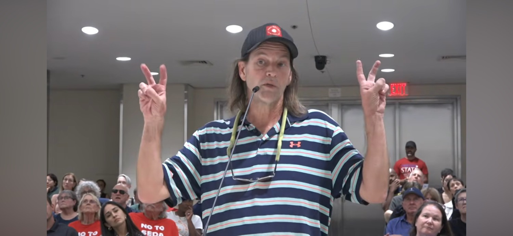
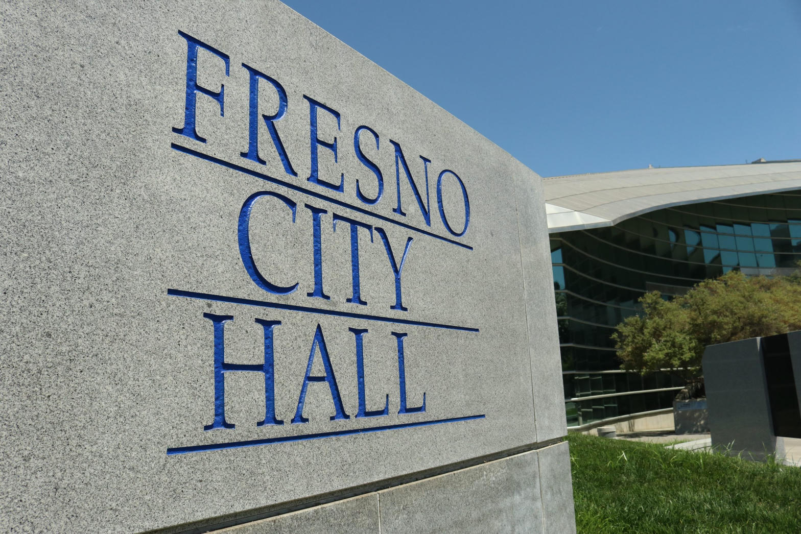
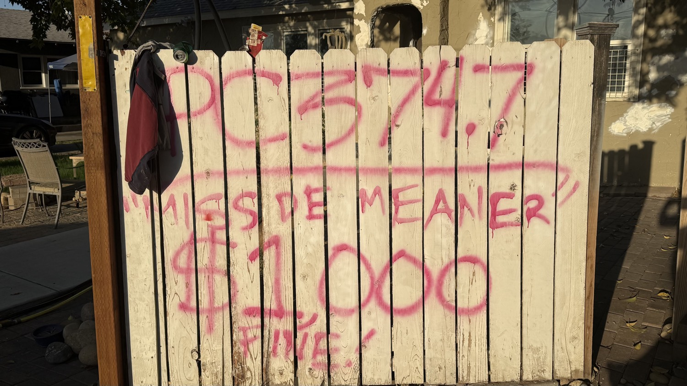
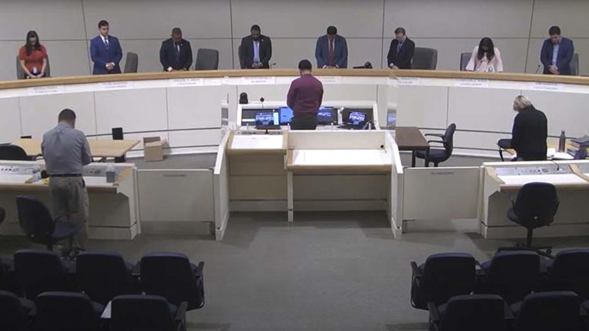

The loaded label is homeless.
It rinses the verb off the noun. Dumping in a canal becomes a housing status. A break-in becomes a condition. Grift on child-serving money becomes compassion. The statute stays on the books. The microphone pretends the statute is rude.
I did not take that microphone on August 19 to audition for a seat. I took it because unused law is a signal, and because I will not put my name on a ticket next to people I treat as predators of general public safety.
The outside is the point. Expose them from the sidewalk and the official tape. Do not warranty them with a ballot line.
Tape 4
Tape 4 · Loaded label: homeless
Aaron Hightower · Planning Commission · August 19, 2026
Start: 1:49:12 · Listen: about 2 minutes
Listen for homelessness treated as crime and grift, unused canal-litter law, broken windows, whistleblow or go down. That is the cut.

What the unused law actually is
California Penal Code 374.7 is not a vibe. Litter or dump waste into a canal, slough, river, or within 150 feet of the high-water mark and it is a misdemeanor. First conviction: mandatory fine. Repeat it and the fine climbs. A court can add litter pickup.
The laterals behind this district are not mysterious. What is mysterious is a government that can see the trash and still speak as if no written law exists.
Unused law is not mercy. Unused law is a signal. Predators read signals. So do the people who turn services into a billing machine.



Wiener killed the bill that would have closed the 311.11 door
Rene Campos ran for District 7 after a 2018 conviction tied to possessing child sexual abuse material. That is Penal Code 311.11 territory. The County Clerk said state law still let him run. In March 2026 the Fresno City Council voted 7-0 to support a state bill barring registered sex offenders from holding office after one of them sat in chambers while schoolchildren walked the room.
Assemblymember Esmeralda Soria carried that bill. AB 2753. It would have barred anyone ever required to register as a sex offender from running for or holding state or local office. The Assembly passed it. Then it hit the Senate Elections and Constitutional Amendments Committee on June 30, 2026.
The chair of that committee is Sen. Scott Wiener, D-San Francisco. He demanded the ban shrink to Tier 3 lifetime registrants only. Soria refused. Wiener voted no and told the committee to vote no. Democrats Ben Allen and Tom Umberg sat it out. The count was 2-1-2. The bill died. Campos celebrated and called it a First Amendment win.
Minutes later the same committee advanced a narrower bill, AB 2691. Critics documented carve-outs that pulled some sex crimes against minors out of the definition of sexual assault. Wiener called the criticism political cynicism. The public record is simpler than the spin. The Campos-inspired ban is dead. The loophole that let a 311.11 registrant file for Fresno City Council is still the law of California.
Wiener's longer paper trail is not rumor. In 2019-2020 he authored SB 145, the bill that changed how close-in-age oral and anal conduct with a minor is treated on the registry compared with vaginal conduct. Opponents treated the bill as a scandal. Wiener treated the opponents as a QAnon mob. Both things can be true at once: the threats against him were real, and the policy still moved the line. In 2020 Gov. Newsom signed it. That is the documented dirt that matters here. A San Francisco senator chairs the gate. A Fresno 311.11 case walks up to the gate. The gate stays open.
The swap that changes nothing operational
Watch the chairs, not the flyers.
Keshia Thomas is leaving Fresno Unified Trustee Area 1. She is not running for re-election to the school board. She is on the November ballot for City Council District 3.
Miguel Arias is leaving City Council District 3. Term limits. He is on the November ballot for Fresno Unified Trustee Area 1.
That is a swap. School board to council. Council to school board. Same two offices. Same two last names circulating through the same child-serving and city-serving money. If both win, the system does not get a new operating system. It gets a seat rotation.
City Council and school board are nonpartisan offices. Arias still talks as if his constituents are a caucus of extreme liberal Democrats. Loaded labels do that work. Unhoused. Murder, when the subject is an ICE agent in Minnesota. Homeless, when the subject is a canal. The labels recruit an emotional majority that is not on the ballot line. Appeal to emotion is the fallacy. The product is more government service as moral theater. The bill still lands on the same federal and state accounts that Minnesota already proved can be stolen in the open.
Opinion, labeled as opinion: I cannot prove in a courtroom tonight that Thomas and Arias personally pocketed a federal dollar. I can say they are part of a systemic failure. A system commandeered by a far-liberal left that treats public safety as the enemy of compassion, then bills compassion back to the same public. That is the grift. Destruction of safety that ordinary people cannot name because the noun has been washed. Homeless. Unhoused. Neighbors. Never the statute. Never the invoice.

The racism charge that did not survive the son
Keshia Thomas. Fresno Unified trustee. District 3 runoff against Joaquin Arambula.
May 17, 2022, GV Wire Unfiltered: she said her middle son went to football practice where he has Arax calling him the racial epithet, then left Bullard for Edison.
Don Arax denied it and sued her and the district for defamation. Public reporting put the combined legal spend near $370,000.
July 27, 2026: her son, Albert Alford Jr., filed a sworn declaration that the 2013 incident wasn't true and that he never told his mother Arax used the slur.
August 17: Fresno Teachers Association called for her resignation. She issued a formal apology. She refused to resign. Trial was set for December 7, 2026. Mediation followed.
A mother can be lied to. A public official still owes due diligence before she uses the most destructive racial charge in American life against a named employee on a recorded show. If the first speaker is a child, the adult who carries the charge into the public square owns the verification.
That is how fraud survives. Not only with fake invoices. With a moral tripwire that detonates inspection. Homeless does the same job on a canal. Racism does the same job on a name.
The cabal is not a cartoon. It is under-the-table communication plus a captured noun.
A commandeered government does not need a smoke-filled room with a logo. It needs a shared vocabulary, a shared donor class, and a shared refusal to enforce written law. People talk. Staff talk. Nonprofits talk. The loaded label travels faster than the statute. Public safety gets treated as the obstacle. The service contract becomes the prize.
I am saying that from the outside. That is the point of dropping the ticket. Association is a warranty. I will not sign it.
The Facebook parallel, for the steel-man
Meta walked into a teen-harm trial talking like the number might be over a trillion dollars. Some states had framed penalties that high. $1.4 trillion showed up in the company's own warning. Then the trial was a few days old and the number collapsed into a settlement in the mid-teens of billions. Wired put the cap at $16.7 billion. Reuters put the package near $18 billion. The liability story shrank by two orders of magnitude the moment the testimony calendar got real.
That is how captured systems talk about harm. Announce an astronomical moral debt. Settle for a manageable check. Keep the machine.
Zuckerberg already has a paper trail of writing large private checks into the public election machinery. In 2020 he and Priscilla Chan put about $400 million through groups such as the Center for Tech and Civic Life to fund local election offices. Supporters called it pandemic rescue. Critics called it Zuckbucks and said the money bent turnout operations toward favored jurisdictions. Either way, a private fortune was allowed to sit inside the official count. When the same fortune later faces a child-safety trial, the public is told the true number was never the trillion. It was always going to be the check they could write.
Local government runs a smaller version of the same play. Announce a humanitarian emergency. Load the noun. Route the federal dollar. If anyone asks about PC 374.7 or PC 311.11, call the question cruel. If anyone asks about a racism charge that the son later recanted under oath, call the question racist. The pattern is the steel-man. Not a courtroom verdict on two local names. A method.

The position
Public safety is not a vibe. Child-serving money is not a community mascot. Unused statutes are not mercy. Homeless is not a get-out-of-the-Penal-Code card.
Minnesota already ran the experiment on child-nutrition theft. Federal prison is what impunity looks like after the story dies. Feeding Our Future. Bock, 500 months. An organizer walked back from Mogadishu.
Opinion again, labeled: some people in this local service machine are going to a federal penitentiary if the same audit culture that finally hit Minnesota ever hits the Valley. I cannot name the docket today. I can name the method.
I will not share a ballot with people I regard as predators of general public safety. I will name them from the outside.
Whistleblow. Or go down with the people who thought the lobby was safer than the record.
High Tower District
721 E La Sierra · Fresno · 93728
Document. Display. Enforce.
Record
City of Fresno Planning Commission, Aug. 19, 2026, official YouTube, 1:49:12. Cal. Penal Code 374.7 and 311.11. AB 2753 (Soria) failed Senate Elections June 30, 2026, 2-1-2, Wiener no. AB 2691 advanced the same day. SB 145 (Wiener), signed 2020. Ballotpedia: Thomas not seeking FUSD re-election, running Council D3. Arias not seeking Council re-election, running FUSD Area 1. Fresno Bee / FTA / SJV Sun on Thomas, Alford Jr., apology, trial, mediation. ABC30 and LAT on Campos and the 7-0 chambers vote. Wired / Reuters / LAT on Meta teen-harm settlement, mid-teens of billions after trillion-scale penalty talk. WashPost / AP on Chan-Zuckerberg 2020 election-office grants. Canal and porch photographs from the High Tower District daily record. Dais still from the official meeting video.